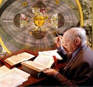

Click here to watch the streaming video of this panel discussion.
God After Darwin: Can Faith and Evolution Be Reconciled?John F. Haught Distinguished Professor of Theology Georgetown University Author of God After Darwin: A Theology of Evolution 7:00 p.m. November 1, 2006 in Macquigg 264 |
|
| Click here to watch the streaming video of this lecture. | |
A Brief History of the Evolution Teaching Controversy: From Dayton, TN to Dover, PAEdward J. Larson Herman E. Talmadge Chair of Law and Richard B. Russell Professor of American History University of Georgia Recipient of the 1998 Pulitzer Prize in History Author of Summer for the Gods: The Scopes Trial and America's Continuing Debate Over Science and Religion 1:30 p.m. November 2, 2006 in Macquigg 264 |
|
| Click here to watch the streaming video of this lecture. | |
Generating Life on Earth: Six Looming QuestionsHolmes Rolston, III University Distinguished Professor of Philosophy Colorado State University Recipient of the 2003 Templeton Prize in Religion Author of Genes, Genesis and God 3:00 p.m. November 2, 2006 in Macquigg 264 |
|
| Click here to watch the streaming video of this lecture. | |
How Galileo Changed the Rules of ScienceOwen Gingerich Professor of Astronomy and the History of Science, Emeritus Havard University Author of The Eye of Heaven: Ptolemy, Copernicus, Kepler and God's Universe 10:00 a.m. November 3, 2006 in Hopkins 162 |
 |
| Click here to watch the streaming video of this lecture. | |
Panel and Lectures are being sponsored by: The College of Biological Sciences, The College of Mathematical and Physical Sciences, The College of Humanities, The College of Social and Behavioral Sciences, The Colleges of The Arts & Sciences, The Institute for Research and Public Humanities, and The Department of Entomology
For more information, contact fisher.14@osu.edu or ward-ross.1@osu.edu